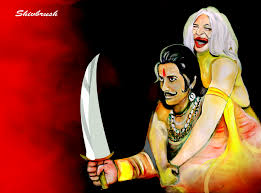

|  |
|
It was a dark night and was raining heavily and there were strange noises from every where and voice of the moaning of jackals could be heard. Although there was a bad atmosphere king Vikramaditya did not fear a bit. He climbed the tree to bring the corpse down and soon he began to walk with the corpse lying on his shoulder. The Betaal spoke: "O King , I pity you as you are making untiring efforts without relaxing as if you wish to achieve something. Instead of enjoying a comfortable sleep in your palace you’re still coming after me” King didn’t speak anything because any word from his mouth would keep Betaal right back on the tree. Once Upon a time there lived a king named Chandrakant. He is very brave and kind king. He was taking good care of his subjects. Everyone was living with peace in his kingdom. |